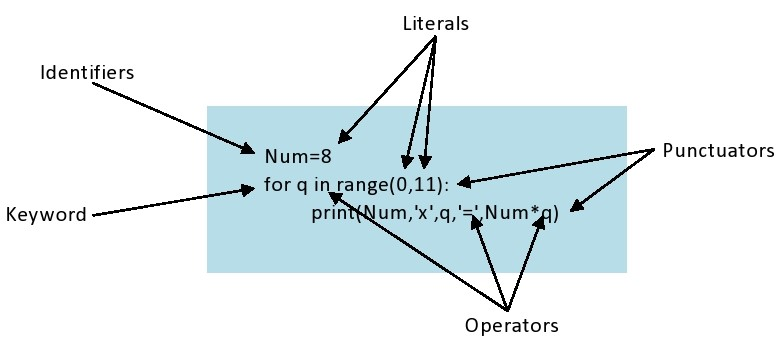
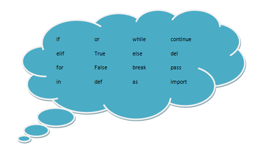

Introduction To Python
Origin Of Python
Python has become a very popular programming language among beginners as well as developers. This programming language was developed by Dutch programmer named Guido Van Rossum in early 1990s at Stichting Mathematisch Centrum (CWI) in the Netherlands. It was a successor of the ABC language. It was named after Rossum's favourite BBC comedy show, Monty Python's Flying Circus. Python is giving tough competition with popular languages like Java, C++, C#, etc. in poularity index.Python is often described as a "batteries included" language due to its comprehensive standard library.
Why Learn Python?
1.Python is the one of the most easiest programming language to learn. It has a very simple syntax which is best for beginner programmers.
2.It has very friendly data structures which can be used for creating fast runtime data structures.
3.Python has built in third party modules (PyPI) which makes python capable of interacting with most of the other languages.
4.Python is a open source language so anyone can contribute towards its development.
5.Python supports large number of libraries which makes some tasks very simple, with less number of lines of code to write, and makes the work very fast.
Applications Of Python :
1.Python is used for web and internet development with frameworks like Django, Bottle, Plone and Flask.
2.Python is used in scientific and numeric computing using Scipy, Pandas and IPython.
3.Python is the future of machine learning you can use python to automate anything you want, like self driving car, robots and many more.
4.Used for creating softwares. Python offers multiple options for developing GUI(Graphical User Interface) like Tkinter and Kivy.
5.Python is also used for game development by using Pygame, Panda3D libraries.
How To Install Python ?
You can install python from its official website www.python.org.
You can also install Python with Anaconda Python distribution.It comes with many pre-intalled libraries like SciPy, NumPy, Panda, etc.Its official site is www.anaconda.com.
Basics Of Python
Tokens
Tokens are the smallest individual unit in a program. Python breaks each logical line into a sequence of elementary lexical components known as Tokens. It is also called lexical unit.
Types Of Tokens
1.Keywords 2.Identifiers 3.Literals 4.Operators 5.Punctuators
Fig1
Keywords
Keyword is a reserved word in a programming language that has a special meaning.They are case sensative.Except True, False and None, all other keywords are lowercase.
Identifiers
Identifier is a user-defined name to represent variables, objects, functions, lists, classes, tuples, dictionaries, etc.There are various rules for forming identifiers:
 An identifier can contain long sequences of letters and digit of any length.
An identifier can contain long sequences of letters and digit of any length.
The first charcter can be a letter or an underscore(_).
Digits(0to9)can be used as a part of identifier except for the first character.
A keyword cannot be used as an identifier.
An identifier should not contain special characters except underscore(_).
Literals
Literals are data items that have a fixed value.
Operators
Operators are tokens that trigger some computation when applied to variables and other objects in an expression.
Punctuators
Punctuatos are basically symbols used for defining structures, for expressions, statements, etc.
Click here for next lesson